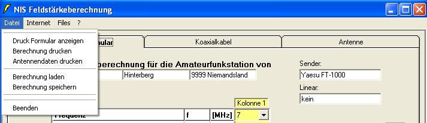
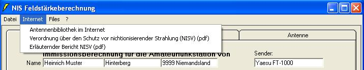
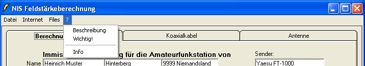
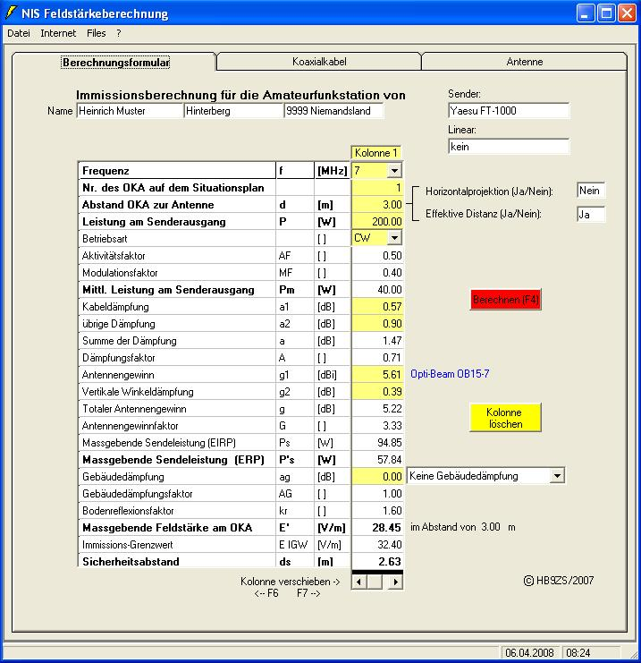
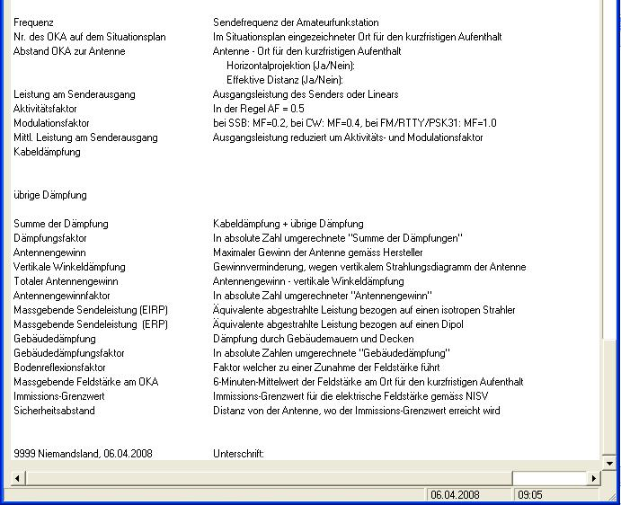
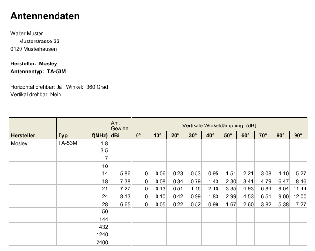

Das Programm ist dreisprachig, deutsch, französisch und italienisch und wird
durch den Benutzer auf die gewünschte Sprache eingestellt. Es verfügt
über eine Datenbank der gängigen Amateurfunkantennen mit Antennengewinn und
soweit vorhanden die vertikalen Winkeldämpfungsdaten der Antennen. Ebenfalls
sind die Dämpfungen der üblichen Koaxialkabel enthalten.
Das Zusatzprogramm "Antennendaten - Eingabe" welches auch mitinstalliert
wird, erlaubt das Eingeben von Antennentypen welche nicht in der Datenbank
vorhanden sind. Diese neuen Typen können unter "Eigene" in die
Datenbank gespeichert werden. Auch enthält das Zusatzprogramm eine Kabeldateneingabemaske für zwei
zusätzliche Antennenkabeltypen die auch in die Datenbank aufgenommen werden.
Die Zusammenstellung der Berechnungen auf dem "Ausdruckformular"
können gespeichert und wieder zurück in das Berechnungsprogramm
geladen werden. Dadurch lassen sich die Daten wieder bearbeiten und neu speichern.
Im Startformular wird die gewünschte Sprache durch drücken der Taste z.B. "Text deutsch" gewählt. Die gewählte Sprache wird immer beim erneuten Programmstart automatisch übernommen.

Betrachten wir zuerst die Menuleiste.


Notwendige Unterlagen zum Erstellen der Immissionsberechnung.


In den Feldern Name werden Vorname und Nachname, Strasse und Hausnummer sowie
Postleitzahl und Wohnort eingetragen.
In den Feldern Sender und Endstufe sind Hersteller und Typ einzutragen.
Horizontalprojektion (Ja/Nein). Darunter versteht man die Ansicht von oben auf
die Antennen und die Distanz zur nächst begehbaren Stelle im Umkreis von 360
Grad. Dabei handelt es sich nicht um die effektive Distanz
Effektive Distanz (Ja/Nein). Die eingetragene Distanz in Meter, entspricht der effektiven Distanz
vom Antenneneinspeisepunkt (nur bei Yagi
Antennen) bis zur nächsten begehbaren Stelle. Dies
ist die vertikale Ansicht.
Die nächste begehbare Stelle kann z.B. ein Mansardenzimmer, Estrich,
Balkon, Garten
etc. sein.
Es können nicht beide Eingabefenster mit Ja beantwortet werden.
Für Drahtantennen (Langdraht, Dipol 40, 80, 160m)
gilt als Distanz (d), die Distanz zum
Antennendraht entlang der Antenne (vom Speisepunkt bis zu den Antennenenden).

Frequenz:
Pfeil im Eingabefeld anklicken und Amateurband auswählen.
Ein Wechsel der Frequenz wird immer auf allen Arbeitsblättern
(Berechnungsformular, Koaxialkabel und Antenne) durchgeführt. Dies hat zur Folge, dass die Kabeldämpfung und der Antennengewinn jeweils
automatisch entsprechend der gewählten Frequenz angepasst wird.
Distanz:
Distanz eintragen und die Eingabe durch die Tasten "Pfeil abwärts"
oder "Eingabetaste (<--') " abschliessen. Das Feld muss wieder gelb
hinterlegt sein, sonst werden die Werte nicht in die Berechnung aufgenommen.
Für die Eingabe der "Kabeldämpfung" und "übrige
Dämpfung" ist in das Arbeitsblatt "Koaxialkabel zu wechseln. Für die
Eingabe "Antennengewinn" und "vertikale
Winkeldämpfung" ist in das Arbeitsblatt "Antenne" zu wechseln.
Sind alle Eingaben vollständig, kann der Berechnungsvorgang durch anklicken der
rot blinkenden Taste "Berechnen" oder
"F4" ausgelöst werden. Die berechneten
Werte werden automatisch in die entsprechende Kolonne des Ausdruckformulars
kopiert. Die Taste "Berechnen" blinkt sobald ein Wert verändert wird.
Dies ist ein Hinweis dass ein neuer Berechnungsvorgang vorgenommen werden muss,
damit die Berechnung stimmt.
Kolonne verschieben:
Unten im Berechnungsformular kann die Kolonne wahlweise durch Anklicken des
Pfeils nach rechts oder links
verschoben werden, oder mit "F6" nach links und mit "F7"nach
rechts. Es stehen pro Ausdruckformular 5 Kolonnen zur Verfügung.
Überschreiben:
Jede Kolonne kann wieder angewählt werden. So lassen sich einzelne Werte
korrigieren und wieder neu berechnen. Auch das Formular "Ausdruck" wird jeweils
automatisch auf
den neusten Stand gebracht.
Kolonne löschen:
Mit der Taste "Kolonne löschen" wird die gewählte Kolonne auf dem
"Ausdruckformular" gelöscht.
Eingaben:
Frequenz:
Eingabe sofern notwendig.
Kabeltyp 1:
Kabeltyp auswählen. Für den Kabeltyp 1 werden die Dämpfungen für die
Amateurbänder zur Information angezeigt.
Kabellänge:
Gelb markiertes Fenster durch "Doppelklick" öffnen. Eingabe der Kabellänge für diesen Kabeltyp.
Fenster mit "Return" schliessen. Die Dämpfung wird automatisch
für die gewählte Frequenz und Kabellänge berechnet.
Kabeltyp2 und 3:
Kabeltyp auswählen. Es erfolgt keine Anzeige der Dämpfungen als Übersicht.
Entsprechend der eingegebenen Kabellänge für den Kabeltyp 2 und 3 wird die Dämpfung
berechnet
Kabeldämpfung Total:
Summe der Kabeldämpfung 1 ,2 und 3
Falsche Berechnung:
In der Ländereinstellung der Systemsteuerung (Windows) muss als
Dezimaltrennzeichen ein "Punkt" gewählt sein.
Ist das Dezimaltrennzeichen auf "Komma" eingestellt rechnet das
Programm falsch.
Zusätzliche Dämpfungen:
Hier können Dämpfungen für Stecker, SWR - Meter, Antennentuner etc.
eingegeben werden.
Wichtig: Zuerst Textfeld ausfüllen! Wenn das Textfeld leer ist, kann
kein Dämpfungswert eingegeben werden.
Eigene Kabeldaten laden:
Sofern mit dem Programm "Antennen- und Kabeleingabe" eigene Kabeldaten
eingegeben und gespeichert wurden, können diese geladen werden.
Eingaben:
Frequenz:
Eingabe sofern notwendig.
Hersteller:
Auswahl des Antennenherstellers. Durch das Anklicken eines Herstellers
werden dessen Antennentypen aufgelistet.
"Diverse" zeigt eine Vielzahl von Antennentypen an. Diese sind vor
allem bei selbstgebauten Antennen von Interesse.
Typen des Herstellers:
Durch anklicken des Antennentyps werden die Daten in das Antennendatenfeld
geladen. Entsprechend dem gewählten Amateurband wird der Antennengewinn im gelb
hinterlegten Feld oben im Arbeitsblatt angezeigt.
Winkeldämpfung:
Die Winkeldämpfung wird durch Anklicken der entsprechenden Kolonne gewählt
und oben im Arbeitsblatt in den gelb hinterlegten Feldern mit Grad und Winkel
angezeigt. Dies natürlich nur wenn entsprechende Winkeldämpfungsdaten
vorhanden sind.
Strahlungsdiagramm:
Durch anklicken der Taste "Strahlungsdiagramm" kann das vertikale
Strahlungsdiagramm sichtbar gemacht werden.
Horizontal drehbar, vertikal drehbar:
Hier sind die entsprechenden Angaben zu machen, die auch in das Ausdruckformular
übernommen werden.


Dies ist eine Teilansicht des Ausdruckformulars. Im Kopf sehen Sie das Feld
"Formular". Hier können Sie durch anklicken von
"Formular
laden" eine gespeicherte Berechnung wieder laden und somit auch
bearbeiten.
"Formular speichern" speichert das Ausdruckformular mit allen
Angaben.
"Formular drucken" Druckt das Formular auf eine A4 hoch
Seite.
Ganzes Ausdruckformular


Im Berechnungsformular kann unter dem Reiter "Datei" --> "Antennendaten drucken" der Ausdruck ausgelöst werden. Es werden immer die Antennendaten der aktiven Antenne und das der Frequenz entsprechende Winkeldämpfungsdiagramm ausgedruckt.


06.04.2008
/ HB9ZS